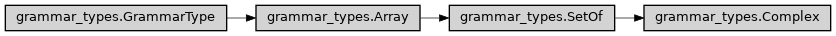

Complex
- class ase2sprkkr.common.grammar_types.Complex(type, default_value=None, length=None, max_length=None, min_length=None, as_list=False, **kwargs)[source]
Class hierarchy
Constructor
- __init__(type, default_value=None, length=None, max_length=None, min_length=None, as_list=False, **kwargs)[source]
- Parameters
type – The grammar type of the values in the list (it can be given by a python type)
default_value – The default value for the list
length – If it is set, the list have to have just this length (it sets
min_andmax_lengthto thelength)min_length – The minimal allowed length of the list.
max_length – The maximal allowed length of the list.
as_list – Type of the value array. True means List, False means np.ndarray, or custom type (e.g. tuple) can be provided. However, the value can be set using tuple or list anyway.
- _string(val)[source]
The string method do some additional transformation (add prefix, postfix etc.), so the actual way how to convert the value for the output should be here.
- I = <Complex>